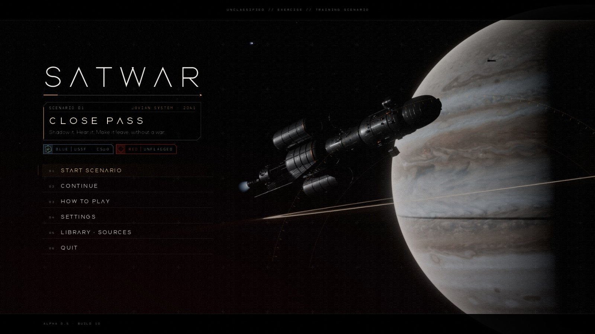
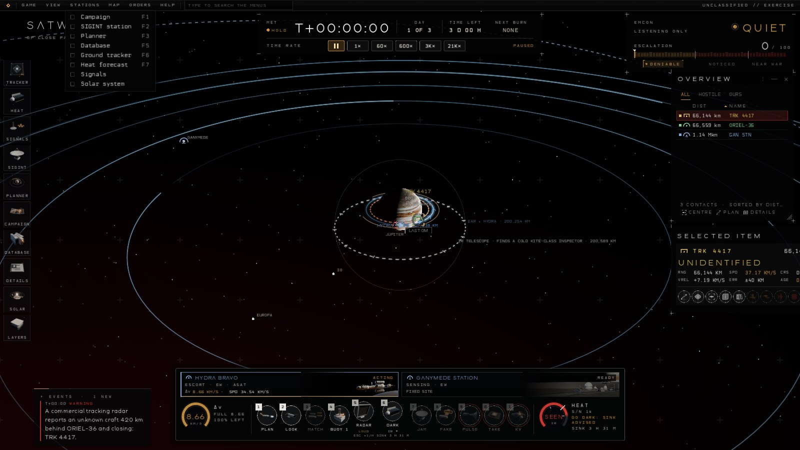
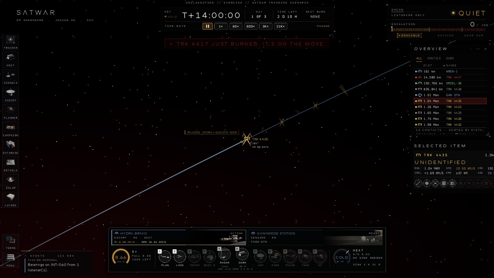
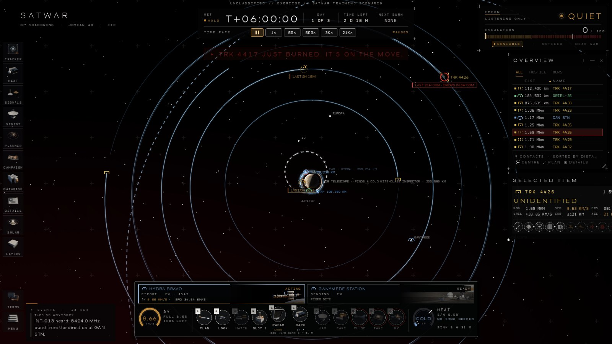

Development
Changelog
Every playtest build, newest first. The current build is Alpha 0.5, build 11. Click a picture to enlarge it.
- Build 1125 Oct 2026 · the new lookAlpha 0.5 · current
-
- SATWAR is now xGEO. The game is xGEO Live; its physics engine, xGEO Core, is being prepared for release as an open-source simulation tool. xGEO is the Space Force term for everything beyond geosynchronous orbit.
- A new look. Ships in dark machined metal with clear-coat and edge glints, a hard Sun with long shadows, a sharper Cassini map of Jupiter with softer, truer colour, and new key art on the title screen.
- One scenario, renamed. THE SHADOWING is now CLOSE PASS, after the inspector's 500 m closest pass in the real incident it is drawn from. The title screen reads START SCENARIO.
- No freeze on the first zoom. Every hull, plume, planet and the Sun are prepared behind the title screen, and orbit lines no longer trail the camera when you zoom or drag.

The new title screen - A header bar. GAME, VIEW, STATIONS, MAP, ORDERS and HELP menus along the top, in the manner of desktop sims, with every command and its key, and a field that searches them all. TERMS and MENU move there from the rail.
- Animated gauges. Fuel drains with a fading trail when you burn; heat eases between COLD, WARM and SEEN. While the drive burns, the heat ring says BURNING and counts down how long you stay visible.
- A calmer emissions and escalation panel. A lamp that breathes while quiet and pulses red when loud, and an escalation scale whose needle glides to its value.

The header bar's STATIONS menu - You have to be there. Jamming from afar no longer wins on its own. Cut off for three hours, the inspector leaves only if one of your ships is within 25 km of it. Alone, it holds its slot and waits.
- Jam before you take. TAKE needs your jammer holding its controller off first, or its owner would simply command it back.
- Detections you can read. The faint grey bearing lines are gone. A telescope sighting is a line and a diamond, a radio bearing a wedge, a radar fix a ring; the newest is labelled with who looked and when.

A telescope detection - Old tracks show their age. A track that has lost contact carries a ring and a chip, LAST 2H 18M, amber after an hour and red near the end, when it says when it will drop.
- No direction arrows on tracks that already sit on their orbit, and track icons shrink a little as you zoom out instead of growing.
- A leaner Selected window. Range once, three tiles for what matters, and one row per action with a single status and cost; the full reasoning is on hover.

How long since we last saw it - Build 1025 Oct 2026 · the solar system
-
- The whole solar system, in 3D. Keep zooming out from Jupiter and the map carries on to Neptune: the Sun, all eight planets on their real orbits, and their names. Double-click a planet or the Sun to fly there.
- Real sunlight and shadows. The Sun is a disc, so Jupiter and its moons cast both a full shadow and a soft edge. The map, the close-up views and your hull's heat all take their light from where the Sun really is.
- Flights between planets, for campaigns that allow them. The planner plans transfers from planet to planet, and corrects them in deep space. THE SHADOWING keeps them off: escaping Jupiter from HYDRA's low orbit takes far more fuel than it carries.

The map, zoomed out past Jupiter's moons - A heat forecast (HEAT, F7). It says whether you are COLD, WARM or SEEN now, counts down to the next shadow, the next cold window and the next time you'll be seen, and charts it over the next orbit. Stay hidden long enough to build a ghost streak.
- The Solar System window lists every planet's distance from your ship, the cheapest flight time and the fuel it would take, against the fuel you have. Window title bars no longer let the alert banner show through.
- An operator's handbook with what you need to win the first operation, and a research edition with every model, source and check behind the game.

The heat forecast - Build 925 Oct 2026 · the playtest pass
-
- Black panels. Every window, menu, the right-click menu and the callout sit on a near-black plate with a hairline edge, so they read against Jupiter's dayside. Each key on the left rail has a translucent tile of its own.
- Resize anything. Every box you can drag now has a grip and remembers its size. Selected Item is shorter.
- A calmer event log, read like a flight controller's console: the last four events on dark glass, each with its time and class (WARNING, CAUTION, NOMINAL or ADVISORY) over one plain sentence.
- Your speed on show on your asset's card and its map label. Icons stay on when you zoom in close.
- A steady dock. Every action keeps its place. One you can't take stays greyed out, and its card says why.
- The callout opens when you select a target, not when you hover over it.

Black plates over Jupiter, and the new event log - Cards, not walls of text. Every tooltip is now a short card: what it does, a tick or a cross for each thing it needs, and its price. The SIGINT station's are rewritten for anyone, not just specialists.
- Is the jamming working? The target reads LINK CUT with a timer, or JAMMER NOT GETTING THROUGH, and an effect that isn't biting says NO EFFECT on its key.
- Honest jamming reach. The jammer used to aim only at your track, so its reach could read 7,000 km far out and then shrink as you closed in. Now it allows for the aim from the start. Once HYDRA's own telescope sees the target, the beam follows the telescope, the way space laser terminals point. Against the inspector the reach holds at about 7,000 km all the way in.
- Match speed holds. MATCH puts you on the target's own orbit rather than just matching its speed, so you stay alongside instead of drifting apart.
- The infrared look switches itself. It picks infrared or the visible telescope by which shows the hull, falls back to infrared in Jupiter's shadow, and says why a hull is still a blur.
- Small fixes. Buoys drop out behind the hull. The tutorial comes back after you hide it. Wide screens run lighter.

The JAM card: what it needs, ticked off - Build 824 Oct 2026 · the walkthrough
-
- A tutorial for everything. Thirty short steps in nine parts teach every control and every mechanic the shadowing uses: the view, tracks and their uncertainty, the database, your goals, map layers, your assets, fuel and heat, time, listening, bearings, identifying, the link budget, the planner, matching speed, the infrared camera, going dark, every effect and its price, and jamming.
- One thing at a time. Each card says what to do in a line and why in another, points at the control, and finishes when you do it. While the clock is all you are waiting on, it says so, with a countdown.
- Listen first. The inspector goes quiet once it sees a warship coming, so you hear and identify it from afar before you close in. A bot played the whole scenario through the tutorial and won.
![The tutorial card over the map, at step 29 of 30: Keep jamming. Cut off for 3 hours, it gives up and leaves. Jamming, press ] to speed up. Below it the dock: HYDRA BRAVO and GANYMEDE STATION as art cards over HYDRA's fuel gauge, its actions and its heat gauge; on the right, Selected Item shows TRK 4417 identified as a KITE-class inspector 2 km away.](../images/g8-tutorial.jpg?v=0.8)
The tutorial, near the end of the shadowing - Telescopes identify. Close enough, your telescope makes out the hull and names it: about 13 resolution elements across it, by the Johnson criteria. A 1 m telescope names a 10 m inspector inside about 1,200 km, a 100 m ship inside about 12,000 km.
- Signals still matter. Only identifying its radio reveals the command channel, so spot jamming needs it; otherwise you barrage the whole band.
- No free looks. Until a track is identified it is only a symbol on the map and a blur of heat in the infrared camera. Once its class is known, the telescope ranges it by how big it looks.
- A cleaner SIGINT station. Solid, its columns level, with larger infrared and class pictures.

Hearing TRK 4417 from afar, before closing in - Look anywhere. Right-drag slides the view off any ship; double-click a moon or Jupiter to fly to it.
- An orientation panel. Up close, a compass marks Jupiter, the Sun, your direction of travel and your target, solid when it faces you, with each one's angle and range.
- A steadier console. Your assets sit under the gauges, and only they change who you act from. The Overview keeps its order while you click, and Selected Item is a box of its own you can drag anywhere.
- One deck for your assets. Each asset is a card with its own rendered art, its fuel and its state, over the acting one's fuel gauge, actions and heat gauge, all on a dark plate that reads against Jupiter. A bigger force wraps onto more rows.
- Radar you can see. Pulses ripple out from the antenna, and ORIEL-36's imaging radar draws its side-looking beam down to the cloud tops.
- Ganymede Station rebuilt as a ground site: telescope domes, the 12 m dish, a counter-comms trailer and an ops vault under an ice berm.
- The SIGINT signal pane is back in its earlier layout, and every class in the threat library links to its database entry.
- True-size ships. Nuclear drives and tanks at their real sizes, WARDEN's drop tanks, rebuilt civil ships, and hits that leave craters and cooling debris.

HYDRA up close, with the orientation panel - Build 724 Oct 2026 · the shadowing
-
- A new scenario: THE SHADOWING. An unflagged inspector closes on ORIEL-36, an allied commercial radar satellite in low Jupiter orbit, and parks beside it. It follows the steps of a real uncooperative approach reported in October 2026: stand off, close to a few kilometres, loiter within half a kilometre, then leave. Times are shortened from weeks to days.
- Win without a shot. Rendezvous, go dark so it keeps talking to its handler, identify its report, and spot-jam its command link. Cut off for three hours, it backs away on its own.
- A guided start. The tutorial walks you through it one step at a time, and finishes each step when you do it.

TRK 4417, a few kilometres from ORIEL-36 - A new console. Smoked glass over black, thin type and hairline marks. The clock, the time rate and your posture each have a panel of their own; the dock keeps your ship's picture, fuel, heat and module dials.
- Time you can read. Mission elapsed time large, the day, the time left and the next scheduled burn under it. Each time rate is its own key, with a real pause key, and the rate in force is lit.
- The selected contact gets a large picture and a grid of range, speed, course, closing speed, error and age.

The new console over low Jupiter orbit - A planner for low orbit. Close to Jupiter an orbit takes hours, so the plot now waits up to a day for the phasing and flies a few hours. Your ship is coasted under full gravity, so the plan costs what the burn will.
- Cheapest counts stopping too. Each square knows the MATCH burn on arrival; the quick picks prefer the ways there you can afford to stop at.
- A steady preview. The route on the map now follows the square under the pointer instead of snapping back.

The planner on ORIEL-36 - Build 623 Oct 2026 · heat, infrared and signals
-
- Hide your heat. Telescopes see only the 6–10 µm band, as NASA's NEO Surveyor does. Every look is a roll of the dice, and noise throws up false blips that a second sensor has to confirm.
- Every watt goes somewhere. Reactor waste heat leaves through radiators laid flat to the plane, so everyone sees only their edge. Press DARK to send it into a heat sink instead: HYDRA vents water for 3.5 h; the tender's ice lasts 15 h and must then be refrozen, which shows.
- How visible are we to it? ⓘ The Inspector adds up skin, radiator, drive, range and sensor noise, term by term, with each source.

How visible HYDRA is to TRK 4417, term by term - Antennas that point. Dishes follow the international reference patterns, so what you hear depends on where you stand against the enemy's beam. The tender spreads its reports thin to whisper.
- A busy band. Seven civil relays, probes and tugs report across the X band, so Red has to be picked out of the traffic.
- A rebuilt SIGINT station. A live waterfall, constellation and eye diagram, and identification by the modulation and symbol rate you measure.

The SIGINT station, identifying TRK 4417 - A clearer planner. The porkchop plot comes first, with a colour key, Fastest, Balanced and Cheapest picks, and a drawn plan of timeline, fuel, passing speed and uncertainty.
- Radar measures. Range and bearing to every track in reach, tight enough to aim a jammer, and every Red ship hears you do it.
- Sunlight finds you too. Once you hold a track, a telescope can keep it in view by reflected light.

The planner, with its porkchop plot first - The platform database (F5). Every class, sensor and drive, with its real-world lineage and sources. Blue is the U.S. Space Force with its CSpO partners.
- Checked against the real thing. The moons follow positions fitted to JPL Horizons, and 732 independent checks hold the game's physics to published references.
- A longer score. Nine long tracks, shuffled and crossfaded, with cues when you make contact, identify, jam or launch.

The database: the 0.5 m infrared telescope - Build 523 Oct 2026 · art and signals
-
- A new look. Our own typefaces, black space with a crimson haze, white engineered type and hairline frames. Your ships are blue, friendlies green, unknowns yellow, hostiles red.
- New ship models. Every class rebuilt with full hard-surface detail: modules, trusses, insulated tanks, radiators and stencilled names.

The title screen - A clearer map. Smooth orbits at any zoom, capability rings for what your ship can see and reach, and a Map layers menu (L) that shows only what the scenario needs by default.
- Click to select, right-click to act. An EVE-style Selected Item and Overview, and a live infrared callout over the track you pick.

The map, with capability rings - The SIGINT station (F2). Click a burst on the waterfall, match it against the threat library, take bearings, and attack from one screen.
- Spot or barrage jamming. Identify a downlink and you know its uplink, so you can spot-jam it. Without it you barrage the whole band and must get much closer.
- New effects and score. Jamming cones, radar sweeps, laser and microwave hits, vacuum explosions, and a darksynth soundtrack.

The SIGINT station - Build 4.123 Oct 2026 · fix
-
- Drive plumes fixed. A burning drive no longer throws a giant white beam across the screen: the plume now runs out of the nozzle, short and bright, and fades into space.
- A new clip at the top of this page, recorded in 0.4.

HYDRA burning, with the fixed plume - Build 423 Oct 2026 · look and feel
-
- A new look, all original. Every frame, button, icon, insignia and the mission patch is new, drawn for xGEO. Windows glint and wipe in, and the console clicks and hums.
- A real title screen. Key art of HYDRA against Jupiter, rendered from the game's own ship model, behind the new xGEO logo.

The title screen and its key art - A console that reads at a glance. The clock and time controls hang at the top centre; escalation is a gauge from deniable to war. The selected contact gets a card with its class picture, range, uncertainty and last contact.
- Your ship's modules sit along the bottom as lit dials, on keys 1–0: green ready, amber running, dark not now.
- Smoother. Time warp no longer makes zoomed-in ships jump. Ships turn to burn and show their drive plume, the planned intercept is drawn on the map with hour ticks and the meeting point, and the menu responds at once.

The new console over the space view - The kit, in one picture. Frames, buttons, dials, 41 icons, the Coalition, Red and Ganymede Station insignia, and the NIGHT HERON patch.
- A proper debrief, framed over its own key art, with what you achieved, what became of each Red asset, and the price in escalation and debris.

The interface kit - Build 3.123 Oct 2026 · polish
-
- No more freeze when you open the planner: it now opens in a fraction of a second.
- A darker, solid console. Opaque windows, hover tooltips that explain everything in plain words, and simpler wording in Plain mode.
- See the ships. Double-click a ship in the Overview and scroll in: its 3D model appears, magnified and labelled. Every orbit has its own colour, with a key.

EXCALIBUR up close in the space view - Build 323 Oct 2026 · 3D campaign
-
- Operation NIGHT HERON. A ten-day campaign against four hidden Red satellites: a tender stalking the freighter, a relay that carries its orders, an inspector shadowing your hunter, and a sleeper that hasn't said a word.
- The whole Jovian system in 3D, under real gravity. Jupiter's flattening as NASA's Juno measured it, and the pull of all four big moons. Plans drift; correction burns matter.
The space view: Red appears only where your tracks put it - Find them by listening. The EW console: deep-space band tiles, a waterfall over the spectrum, bearings, and every heard signal kept as an annotation. One ear gives a line; drop listening buoys so lines cross into a fix.
- Plain or US doctrinal language. Switch any time between everyday words and the terms of JP 3-85, JP 3-14, JP 3-60 and the Space Force's Space Warfighting framework.

The EW console, laid out after open-source SDR tools - Move by orbit. The planner draws a porkchop plot of fuel against departure and flight time, aimed at where your track says the target will be.
- Non-kinetic first. Jam, spoof, dazzle, microwave pulse or take control, each decided by its physics and each with a price. An interceptor is the last resort, and it leaves debris. Stay below open war.

A porkchop plot, solved by Lambert's problem - See it in infrared. The camera shows what a telescope really would: brightness is radiance, sharpness is the diffraction limit. Close in, the hull resolves; far off, it's one point of light.
- Original score, a tutorial you finish by doing, saves, and a library of every source, US doctrine first.

The long-wave infrared camera, at 21 km - Build 123 Oct 2026 · browser
-
- The first playtest. The campaign map of the Jovian system and one scenario, INDUSTRIAL INTENT, from the drive flash to the after-action report.
- Plan with real orbits. Pick a target and a time of flight; the planner solves Lambert's problem, shows the arc, the delta-v and how uncertain the target will be when you get there.

The map at T+00:00 with HYDRA's intercept planned - Find, fix, finish. Passive infrared sees a cold hull only up close; lines of bearing from two sensors cross into a fix; radar gives a hard lock but is heard ten times farther away.
- A hostile that watches back. If it sees a warship closing, it re-plans its own transfer and dodges. Every dodge is a burn you can see.

Radar lock: the ellipse collapses and the shot opens up - Learn the science as you play. Every line in the event log has a WHY? link to a short note on the physics behind it, with its sources.
- See what really happened. The after-action map shows the hostile's true path against what your tracking believed.

A science note, with its sources